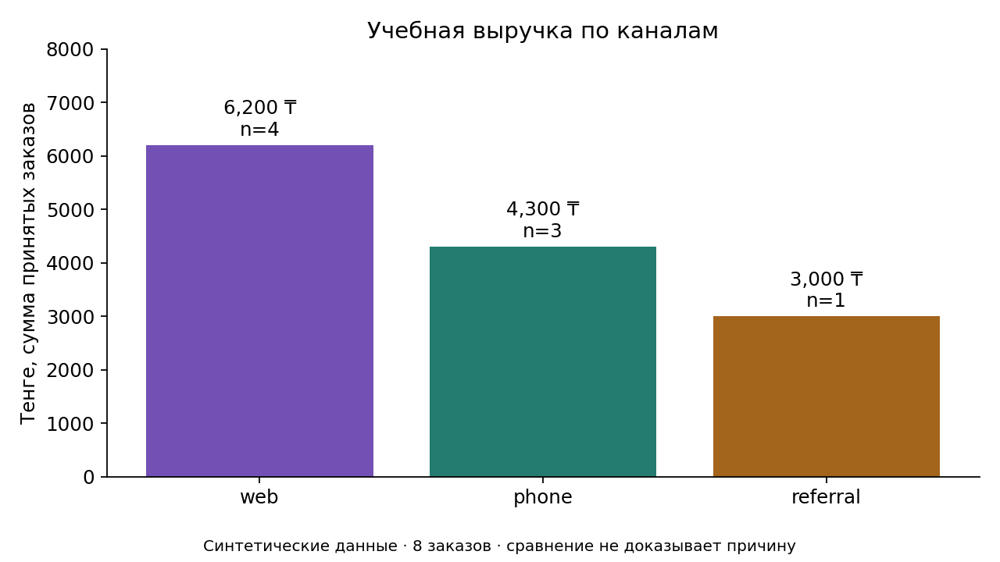
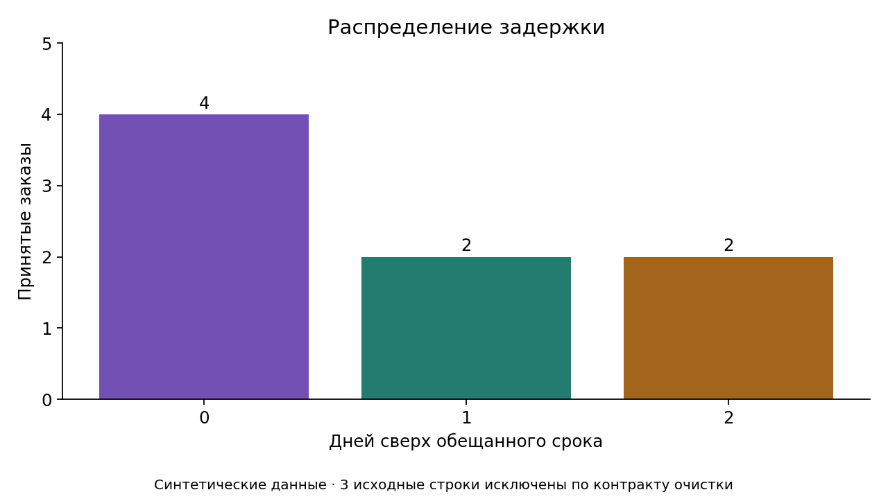
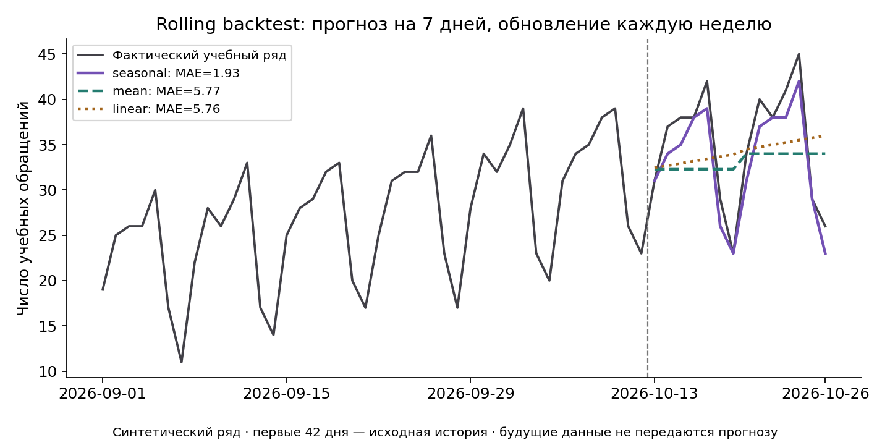
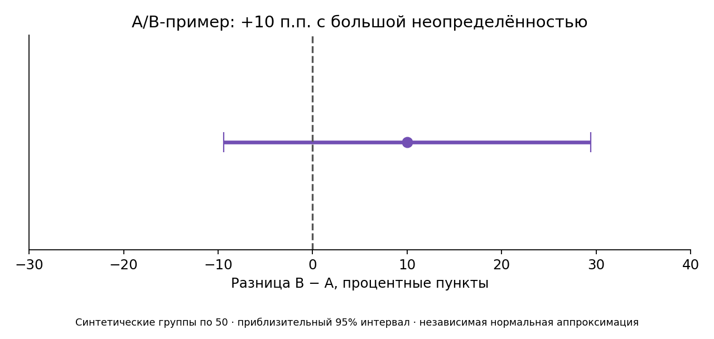

Заявки мастерской: учебный отчёт
Все данные вымышлены. Небольшая выборка не доказывает причины различий между каналами.
| Заказ | Выручка, ₸ | Канал | Поздно |
|---|
Общий обзор всех принятых заказов
Графики ниже показывают полный набор; фильтр выше меняет KPI и таблицу.




Ограничения
Задержка рассчитана только для принятых строк. Контракт без возвратов отклоняет отрицательную сумму. A/B-агрегаты и временной ряд синтетические; они не описывают настоящий бизнес.